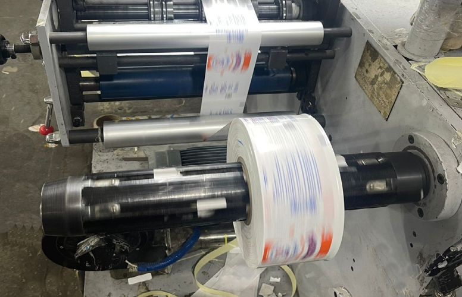
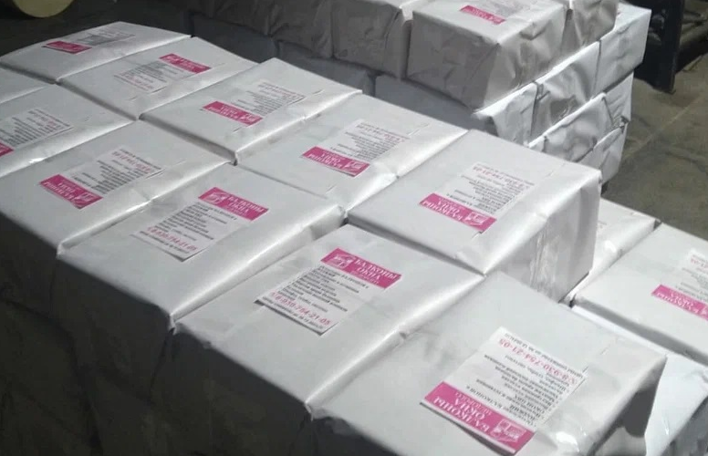

Виды печати гибкой упаковки
Производство рекламной упаковки
Оригинальная упаковка товара оказывает подчас решающее значение в привлечении внимания и повышении покупательского спроса, отождествляя бренд с качеством содержимого. Одним из основополагающих факторов является подбор вида печати гибкой упаковки, влияющего на внешний облик товара, его презентабельность, функциональность и стоимость продукции. Важный момент – возможность долгосрочного хранения без потери потребительских свойств, защита от негативных внешних воздействий яркого света, сторонних запахов, вредных бактерий, что имеет первостепенное значение в фармакологии и продовольственной отрасли. Наша полиграфическая компания использует следующие виды печати гибкой упаковки.Флексопечать – самый известный вид печати гибкой упаковки, посредством подготовленного резинового клише на поверхность наносится детализированный красочный рисунок. Флексопечать можно использовать для создания покрытия на самых разнообразных основах – полиэтилен, фольгу, плотный картон, лавсан. По скорости изготовления, себестоимости флексопечать приемлема для печати крупных тиражей упаковочного материала.
Ротогравюрная печать подразумевает применение на типографском оборудовании металлического вала для нанесения детально проработанных, высококачественных четких фрагментов изображения.
Назначение тактильного лака заключается в придании рельефности для усиления ощущений при прикосновении к поверхности упаковки, производит имитацию волокон дерева, шершавость пергамента, крафт-бумаги.
Трафаретный вид печати гибкой упаковки предполагает нанесение изображения при помощи подготовленного шаблона с вырезанными отверстиями для переноса краски с заранее заданной толщиной покрытия и создания необычных визуальных композиций. Оттиску придается своеобразная глубина, необычная фактура, поразительная живость и сочность.
Полиграфическая компания ТППАК применяет передовые технологии при производстве основных видов печати гибкой упаковки с разработкой уникальных макетов с вовлечением профессиональных дизайнеров.